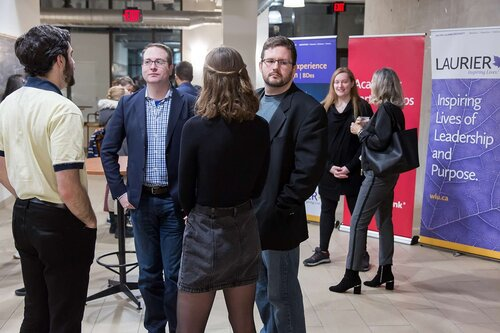

A Brief Bio
Hello there, as you can see I am trying desperately to escape this event so I can return home and work on sketching.
I am a proud participant in the User Experience and Design program at Wilfrid Laurier. Armed with a background in business, I have a unique take towards design, but so does everyone else I would hope. I switched my path in life because I could not continue being the accountant for the change makers, I wanted to be the change maker myself, in my own way.
The tools in my office are my self built computer, a hobby of mine, and my Huion Kamvas GT-191 V-2, which I use for all of my sketch work.
My personal area of focus is with disabilities and the elderly.